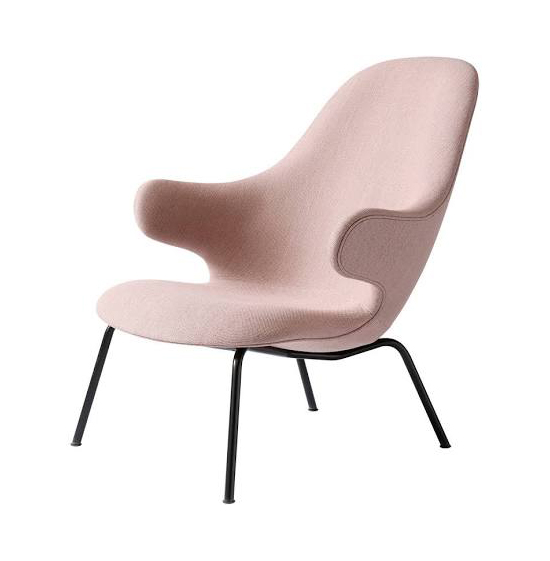

COLLECTIONS

Vases
An abundance of talent can be found in them, just the same as can be found in the pieces supporting them such as a cabinet. Their purpose is a decorative one, although for us, they carry an emotional and artistic value. They are timeless and with the passing of time we continue to add designs to a collection that continues to grow in importance within the range we have on offer.

Furnitures
Hayon says that because the nature of work is changing, furniture design for the office is in a "hybrid moment", where designers need to create furniture that can adapt to both home and work environment.
Lamps
The hanging and table lamps are made up of a blown glass diffuser and a white, black or golden ceramics base. The result is a set of strongly decorative objects that produce a warm ambient light and can be used in a domestic environment as well as in contract projects.
Rugs
A wild collection with a great sense of humour. Created with the hand tufting technique, a manually operated pistol injects pieces of wool, intuitive and fluid lines are achieved, as well as an organic composition. The definitive and faithful reproduction of the original sketch by the designer.